Brand identity · Concepts for discussion
CAT logo proposals
23 designs to discuss. Each keeps the cat idea, but makes a different case for how our club could look: formal, welcoming, modern or culturally expressive.
Classic & character
Seven ways to balance readable CAT lettering with a memorable feline personality.
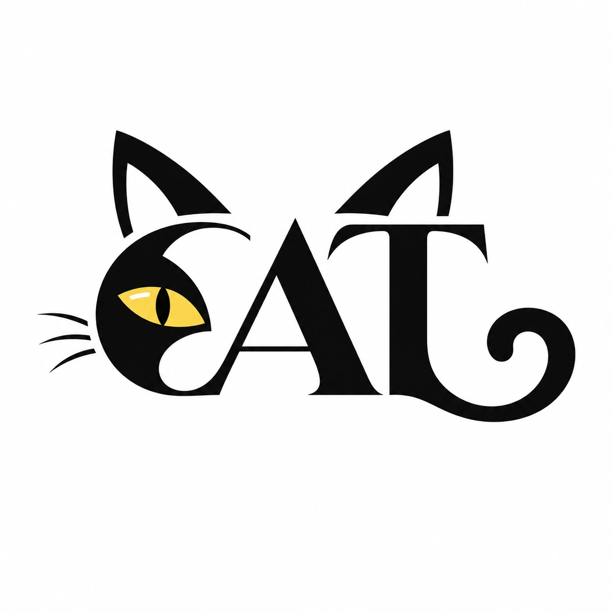
CONCEPT A01
Classic serif cat
A yellow eye sits inside the C, with outlined ears, whiskers and a curled tail extending from the T.
- Why we might choose it
- The strong serif letters give it a formal feel while the cat details keep it distinctive. It connects most directly to the existing black-and-yellow CAT identity.
Choose this ifYou want an evolution of the current logo with a more polished, established character.
- What to consider
- The fine whiskers and eye highlight may disappear in a small profile icon.
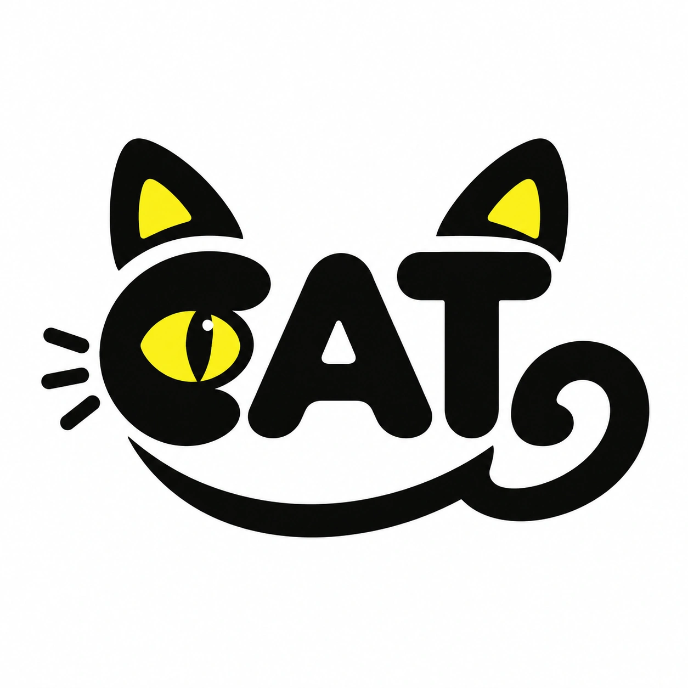
CONCEPT A02
Friendly rounded cat
Soft, rounded CAT letters, yellow inner ears and a broad curved tail create an approachable face.
- Why we might choose it
- Its softer shapes could make a demanding advanced-speaking club feel welcoming to newcomers.
Choose this ifYou want warmth and community to be the first impression.
- What to consider
- The playful style may feel less suited to formal conference materials.
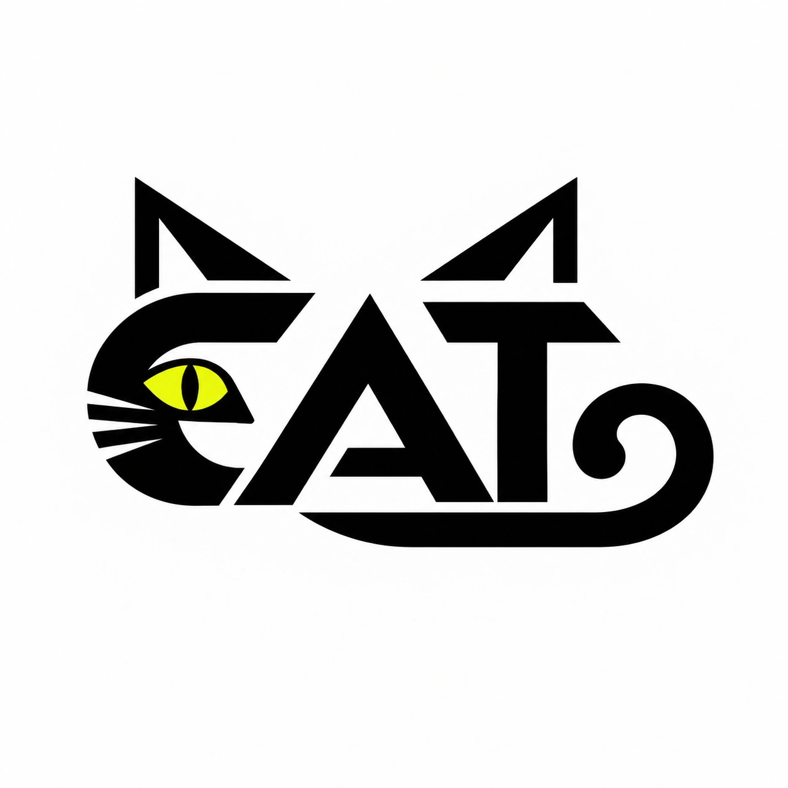
CONCEPT A03
Angular compact cat
Sharp ears, a triangular A and a low sweeping tail form a compact horizontal wordmark.
- Why we might choose it
- The bold geometry gives the mark a clear, confident structure and keeps CAT prominent.
Choose this ifYou want a contemporary identity that works well across website headers and posters.
- What to consider
- Its sharp expression can feel intense; check that the C remains obvious at small sizes.
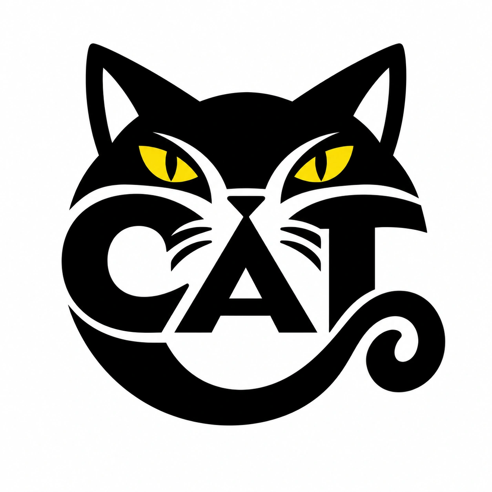
CONCEPT A04
Full-face emblem
Two yellow eyes and a complete cat face frame the CAT letters inside an almost circular silhouette.
- Why we might choose it
- The symmetrical face has a strong presence and a compact shape that could suit an avatar or badge.
Choose this ifYou want a distinctive emblem rather than a mainly horizontal wordmark.
- What to consider
- The face competes with the letters; the club name would help unfamiliar viewers understand it.
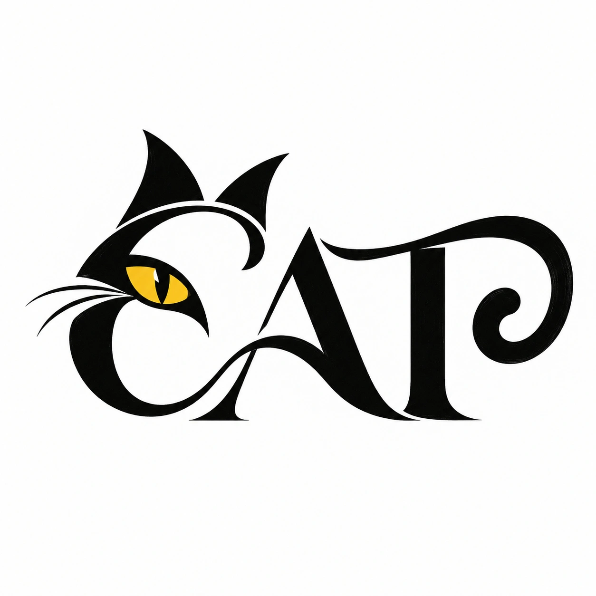
CONCEPT A05
Calligraphic flow
Thin, sweeping strokes connect a feline C to elegant serif lettering and an extended spiral tail.
- Why we might choose it
- The flowing lines could echo expressive speaking, poise and personal style.
Choose this ifYou want an elegant direction for speeches, showcases and formal events.
- What to consider
- Its narrow strokes need testing for printing, embroidery and small digital use.
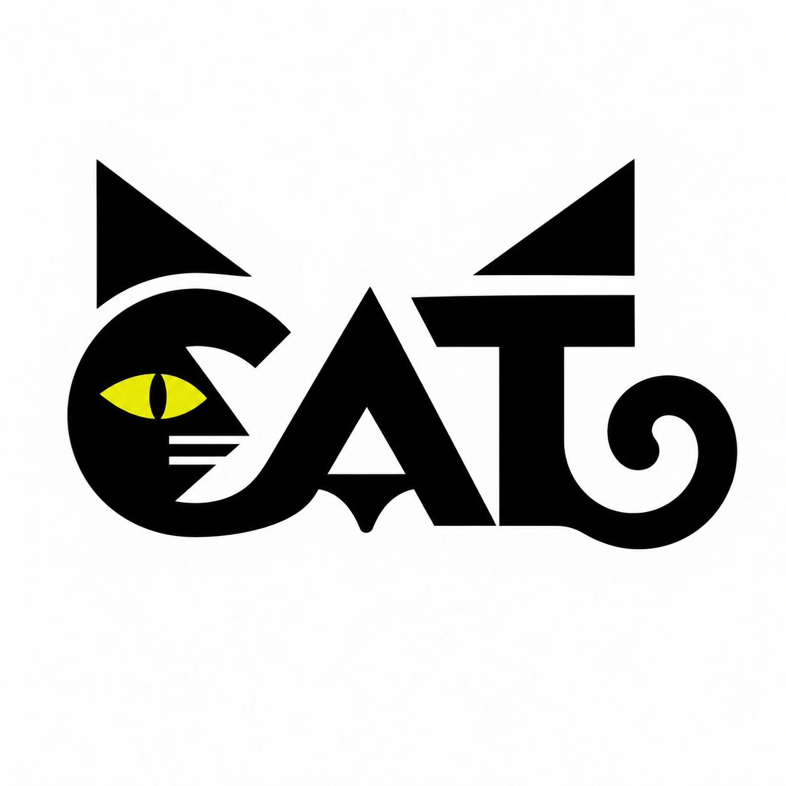
CONCEPT A06
Geometric continuity
A bold feline C flows into a triangular A and a substantial T, with a simple spiral at the right.
- Why we might choose it
- It keeps the visual language direct: black shapes, one yellow eye and a readable acronym.
Choose this ifYou want a restrained update with a strong, consistent silhouette.
- What to consider
- The small white whisker cuts and tight letter joins need checking at avatar size.
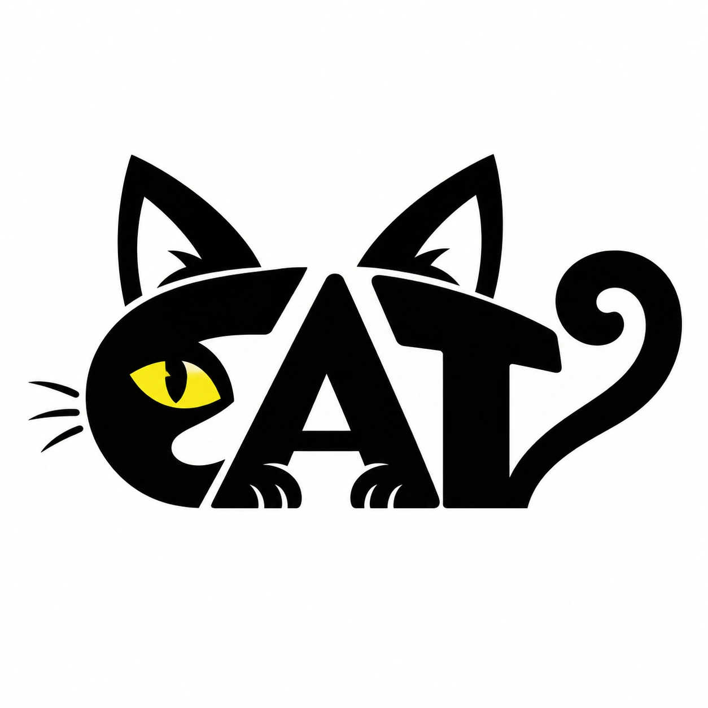
CONCEPT A07
Playful paws
Pointed ears, a bright eye, small paws under the letters and an upright tail make the cat more animated.
- Why we might choose it
- The added character could work well on informal club posts and member merchandise.
Choose this ifYou want a mascot-like identity with energy and a touch of humor.
- What to consider
- The paws add detail and make the mark more playful than the other formal options.
Chinese cultural accents
Seven concepts add seals, stars, rooflines, brush strokes or decorative tail details.
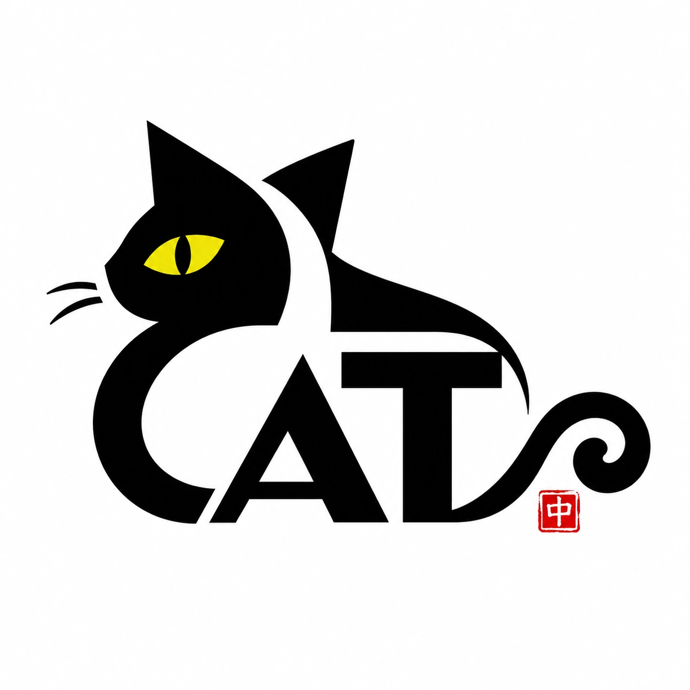
CONCEPT B01
Seated cat with 中 seal
A seated cat rises above the C and A, with a curled tail and a small red 中 seal.
- Why we might choose it
- The silhouette gives the cat a clear identity while the seal offers a compact reference to China.
Choose this ifYou want a recognizable cat figure and a modest Chinese accent.
- What to consider
- The tall composition needs more vertical space, and the small seal will be hard to read in an avatar.
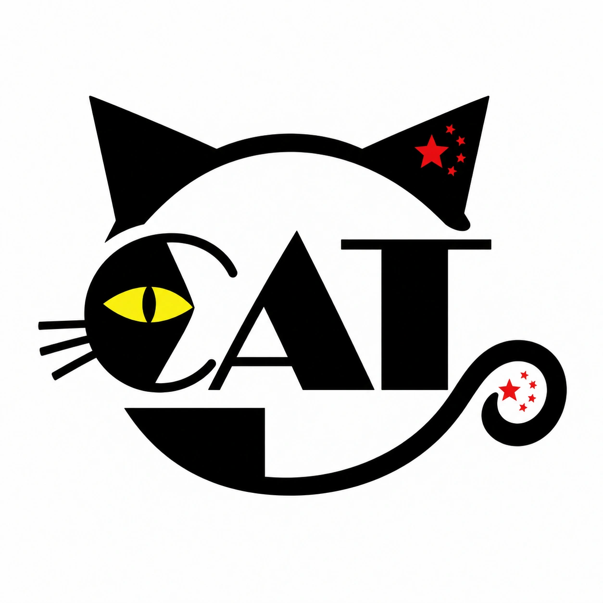
CONCEPT B02
Stars in ear and tail
The familiar CAT structure gains red five-star motifs in the right ear and the tail curl.
- Why we might choose it
- It makes the China reference explicit while retaining the black cat and yellow eye.
Choose this ifYou want the club’s China identity to be immediately visible.
- What to consider
- The repeated national-symbol imagery is visually strong and may dominate the speaking-club message.
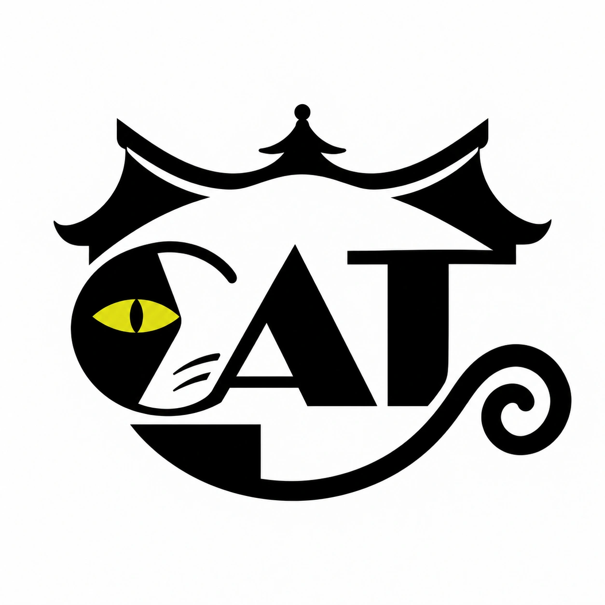
CONCEPT B03
Architectural roofline
A broad curved roof shape sits above CAT, with whiskers inside the C and a smooth spiral tail.
- Why we might choose it
- The roofline could suggest a shared place for gathering and a Chinese architectural influence.
Choose this ifYou want a cultural reference without adding another accent color.
- What to consider
- The roof and whiskers make the silhouette busy; both need checking at small sizes.
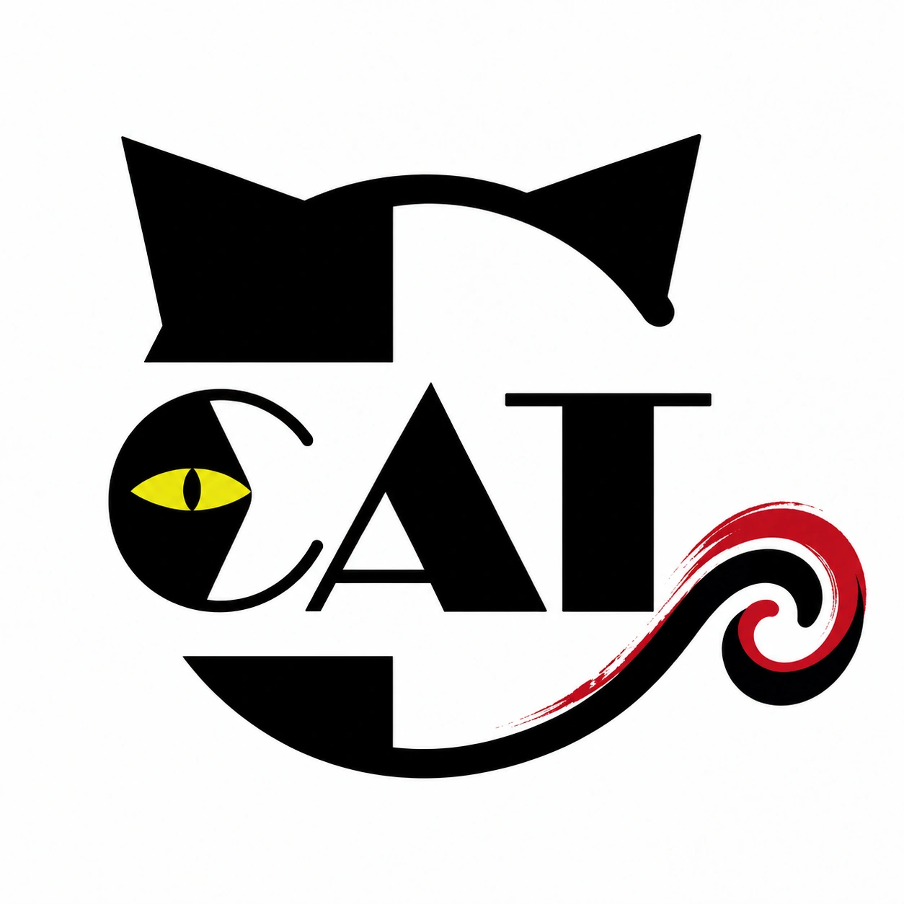
CONCEPT B04
Red brushstroke tail
A red brushstroke sweeps along the black tail and around its spiral.
- Why we might choose it
- The red movement gives the mark a strong focal point and could suggest expressive delivery.
Choose this ifYou want a dramatic accent for event posters and stage graphics.
- What to consider
- The brush texture is less consistent than the solid lettering and may be harder to reproduce cleanly.
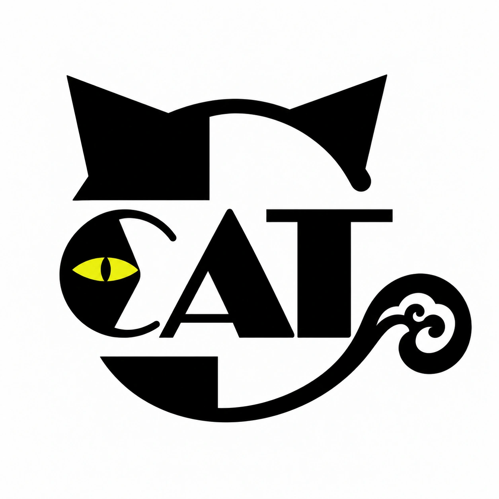
CONCEPT B05
Cloud-shaped tail
The original CAT-like silhouette incorporates a white cloud-like ornament inside the tail curl.
- Why we might choose it
- It adds a subtle decorative reference while keeping the design in black, white and yellow.
Choose this ifYou want a small cultural detail with minimal change to the overall color system.
- What to consider
- The ornament is easy to miss, and its small white spaces can close up when reduced.
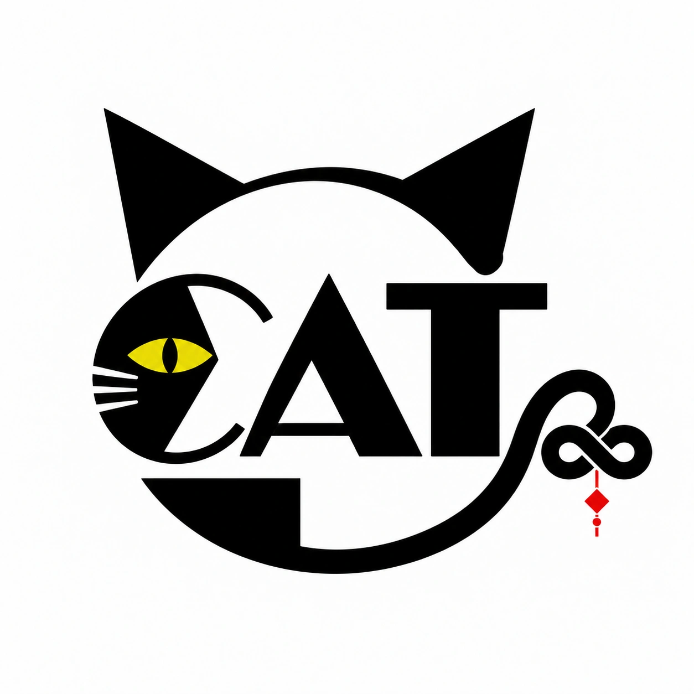
CONCEPT B06
Knot-tail ornament
White whisker cuts and a knot-like tail end lead to a small red hanging ornament.
- Why we might choose it
- The ornament could suggest connection and fellowship, giving the mark a clear story for members.
Choose this ifYou want a club identity that emphasizes people coming together.
- What to consider
- The pendant and knot need simplification for very small icons or stitched materials.
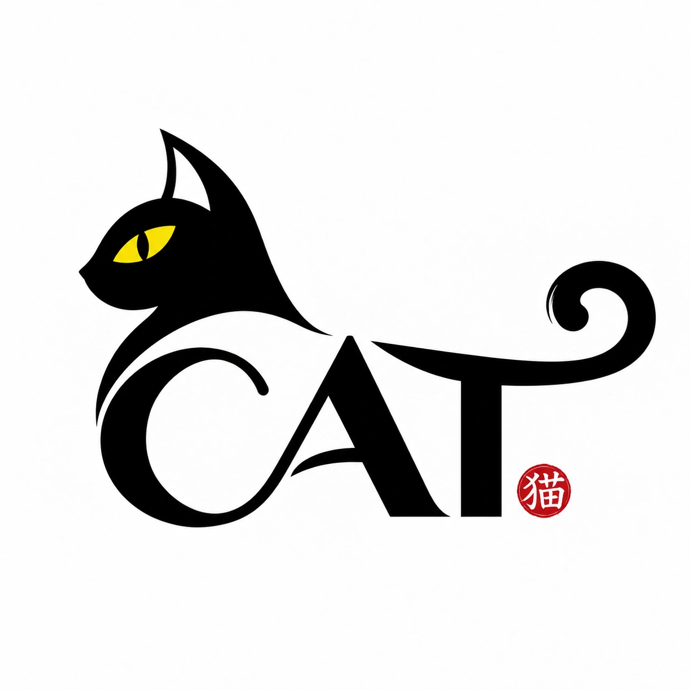
CONCEPT B07
Profile cat with 猫 seal
A cat’s head in profile rises above serif CAT lettering, balanced by a round red 猫 seal.
- Why we might choose it
- The profile feels poised and observant; the seal makes the cat theme explicit in Chinese.
Choose this ifYou want an elegant cultural direction with a clearly identifiable feline character.
- What to consider
- The profile and seal add height and detail, so this is less compact than the simplest wordmarks.
Refined & symbolic
Nine variations explore cleaner silhouettes and more focused cultural or speaking-related cues.
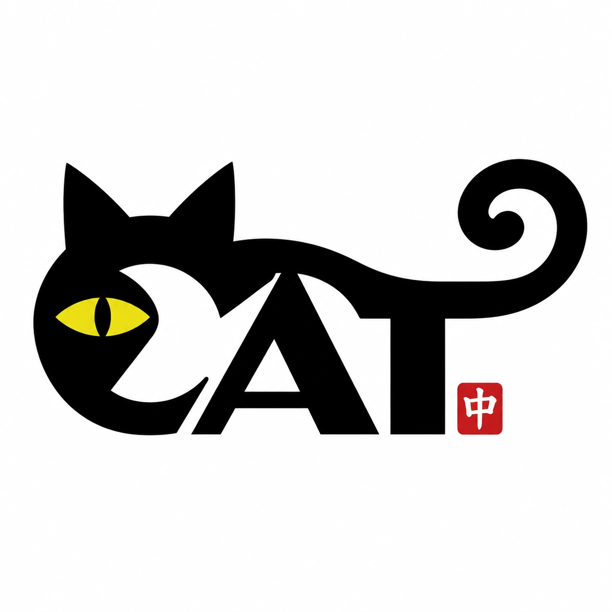
CONCEPT C01
Streamlined cat with 中 seal
The C becomes a cat’s head, the top of the T flows into a high curled tail, and a red 中 seal anchors the right side.
- Why we might choose it
- Its long, continuous silhouette is easy to recognize and keeps the cultural accent separate from the letters.
Choose this ifYou want a modern horizontal mark with a clear China reference.
- What to consider
- The long tail makes it harder to fit into a square avatar without reducing the lettering.
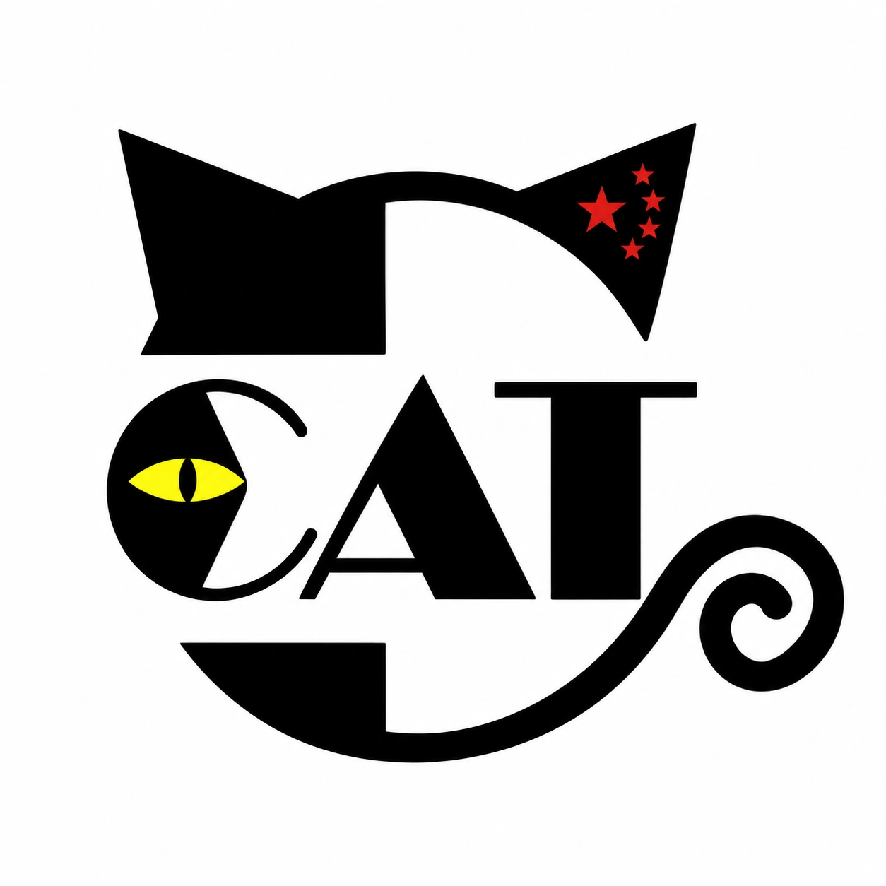
CONCEPT C02
Single star-cluster ear
A simple CAT body is topped by a broad ear silhouette with one red five-star cluster.
- Why we might choose it
- A single accent creates a clearer focal point than the version with stars in two locations.
Choose this ifYou prefer an explicit China reference with fewer decorative elements.
- What to consider
- The stars remain a prominent national cue, and their details need checking when the logo is small.
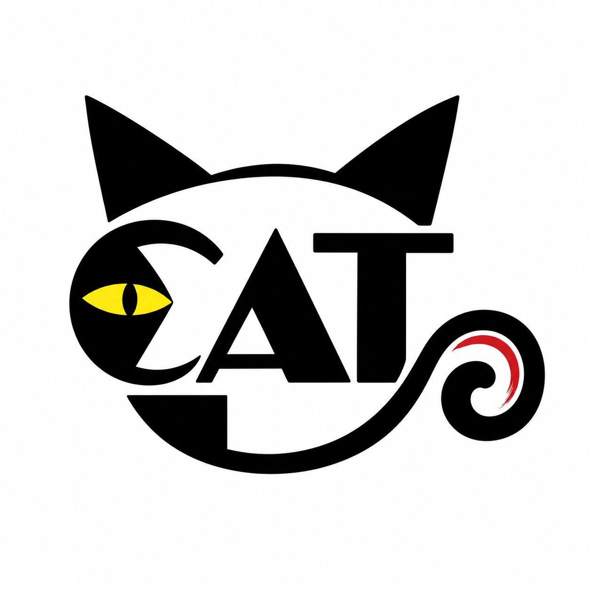
CONCEPT C03
Red accent inside the curl
A small red curved stroke appears inside the familiar black spiral tail.
- Why we might choose it
- It introduces energy without changing the overall CAT silhouette very much.
Choose this ifYou want a modest refresh that members can recognize immediately.
- What to consider
- The red stroke is subtle and may not provide enough distinction from the current logo.
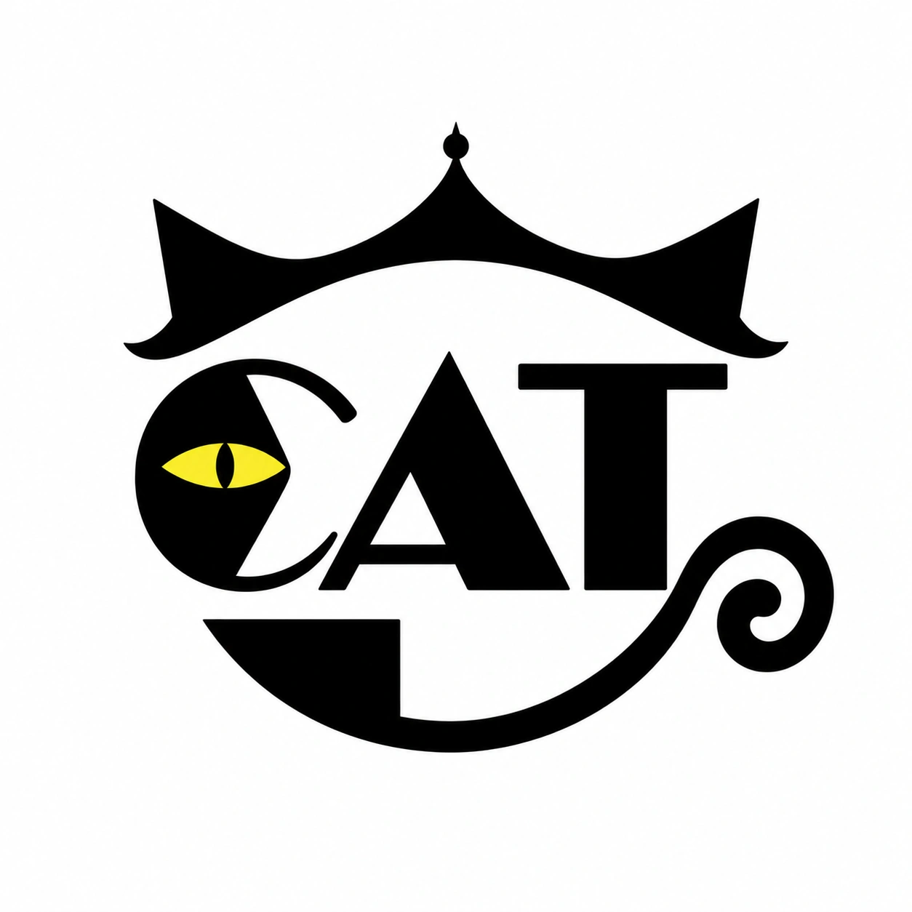
CONCEPT C04
Minimal roofline cat
A restrained curved roof shape connects the ears above simple CAT lettering and a clean tail.
- Why we might choose it
- It balances cultural character with fewer details and keeps the acronym easy to scan.
Choose this ifYou want a calm, relatively simple identity with a subtle architectural reference.
- What to consider
- Without a full club-name line, the mark alone does not explain that CAT is a speaking club.
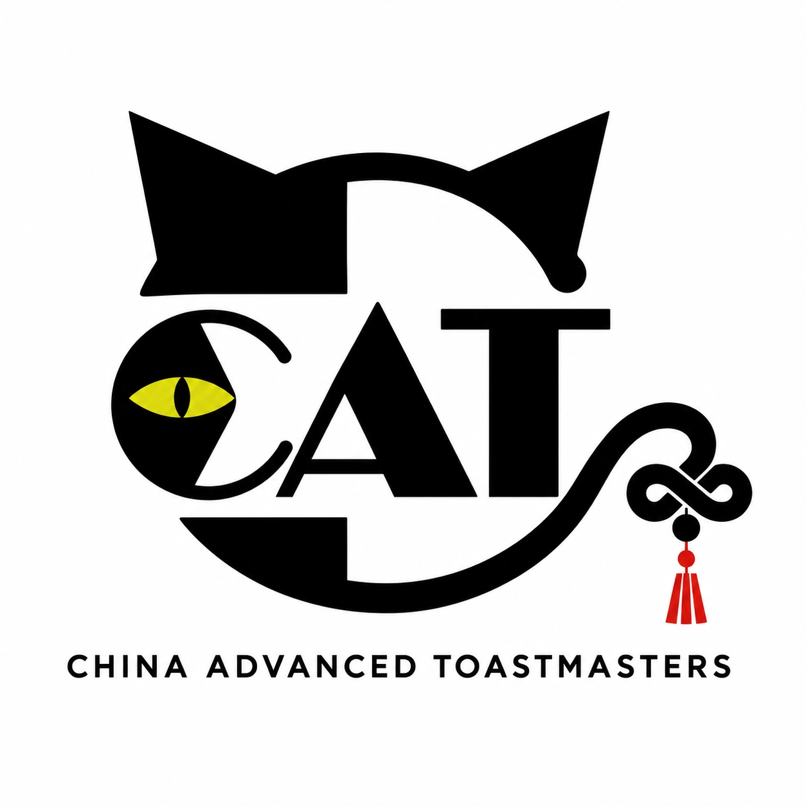
CONCEPT C05
Knot-tail with full club name
The tail ends in a knot-like ornament with a red tassel, above the words CHINA ADVANCED TOASTMASTERS.
- Why we might choose it
- The full name answers the biggest question a cat symbol raises: what organization does it represent?
Choose this ifYou want an explanatory lockup for posters, banners and first-time visitors.
- What to consider
- The small name line and tassel need a simpler companion version for avatars.
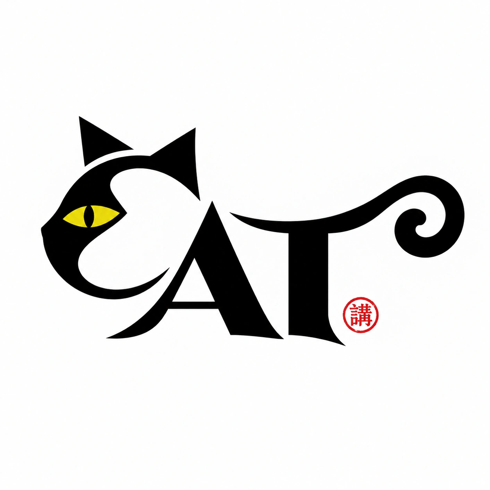
CONCEPT C06
Speaking seal 講
An open feline C, triangular A and curling T are paired with a round red 講 seal.
- Why we might choose it
- The character gives this concept a direct connection to speaking, helping the visual story match the club’s purpose.
Choose this ifYou want the cultural accent to say something about communication rather than only location.
- What to consider
- The character may be unfamiliar to some viewers and becomes difficult to read at small sizes.
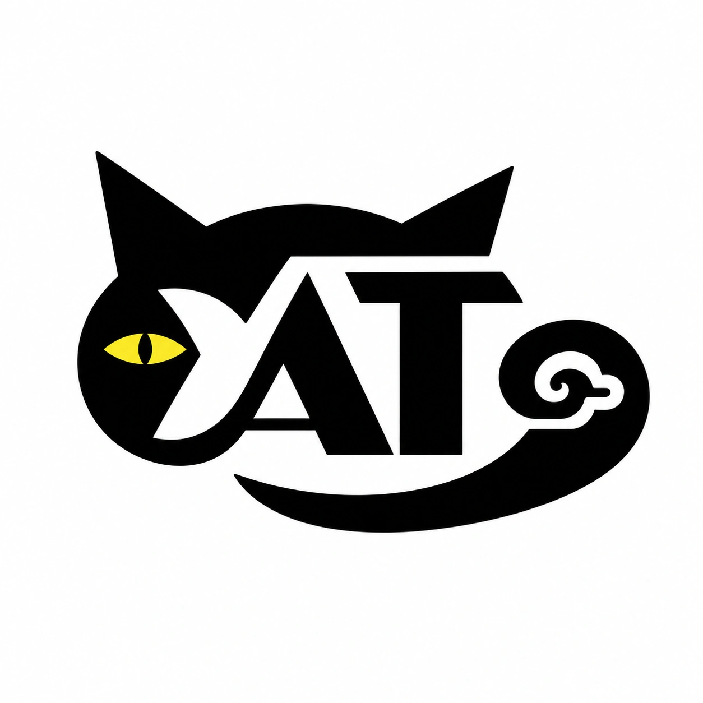
CONCEPT C07
Continuous cloud curl
The ears and letters form a bold, continuous outline, with a cloud-like cutout inside the extended tail.
- Why we might choose it
- The smooth outline feels cohesive and gives the cultural detail a natural place within the mark.
Choose this ifYou want a clean black-and-yellow direction with a discreet decorative cue.
- What to consider
- The tail ornament can disappear at small sizes, and the connected shapes need a readability check.
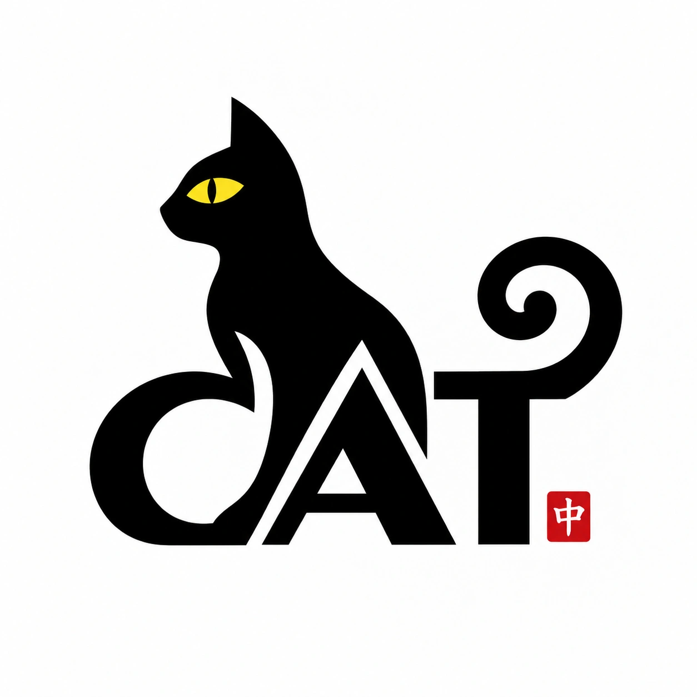
CONCEPT C08
Upright cat with 中 seal
An upright cat silhouette sits over the C and A, with a high spiral tail and a square red 中 seal.
- Why we might choose it
- The cat reads as a complete character, creating a confident emblem with a compact China accent.
Choose this ifYou want a more symbolic, upright composition for badges or presentation covers.
- What to consider
- The silhouette is visually dense, so small versions need testing to keep CAT readable.
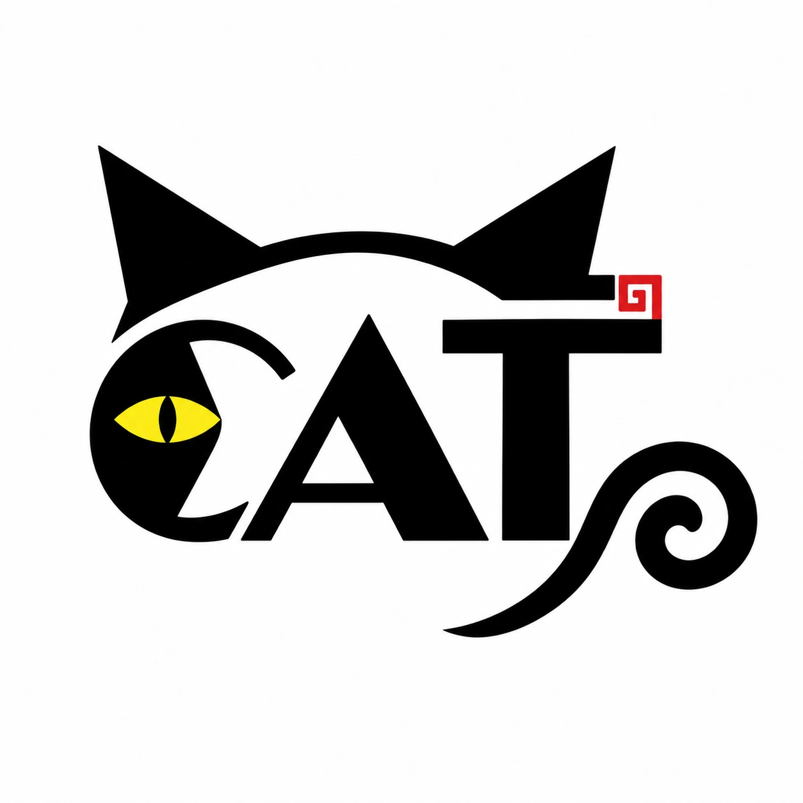
CONCEPT C09
Geometric red corner accent
A crisp CAT wordmark and long spiral tail are finished with a small red square-spiral detail above the T.
- Why we might choose it
- The geometric accent adds distinction without relying on a full character, flag or hanging ornament.
Choose this ifYou want a restrained modern direction with one small red focal point.
- What to consider
- The corner motif is open to interpretation and may disappear when the logo is reduced.
How we can choose
Start with the impression we want to make, then test the strongest options where we actually use them.
- Formal and established: Compare A01 and A05 for their serif lettering and more elegant character.
- Simple and contemporary: Compare A03, A06 and C09 for their clear shapes and restrained details.
- Chinese character: Compare B01, B07 and C06 for their seals and more specific cultural cues.
- Warm and memorable: Compare A02, A04 and A07 for their stronger mascot personality.
- Practical test: Check the shortlist as a small WeChat avatar, in black and white, and on a poster beside the full club name.
Concepts for discussion. The reasons above are visual interpretations of the supplied designs, not statements of the designer’s original intent.